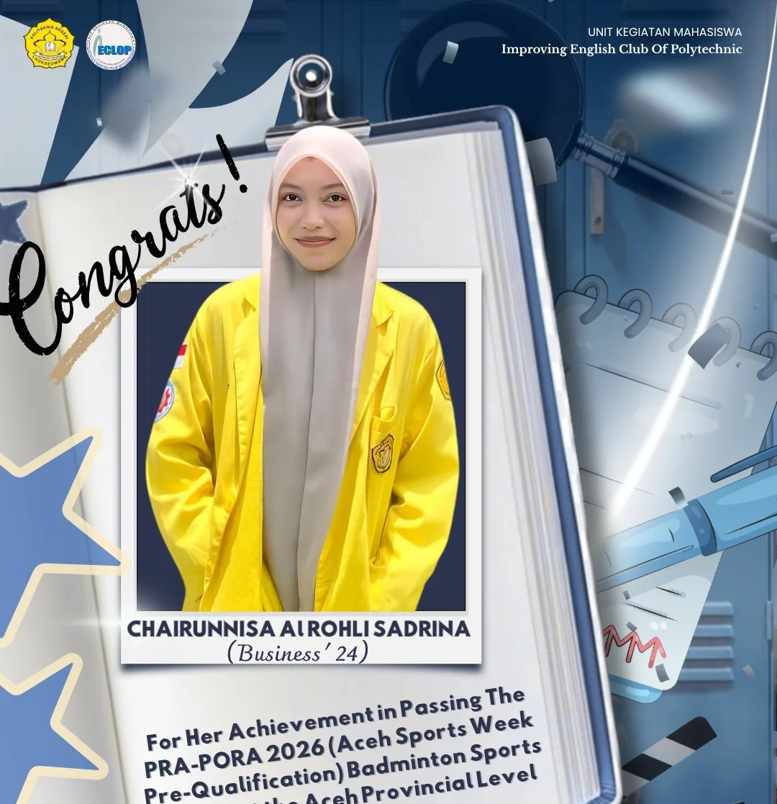
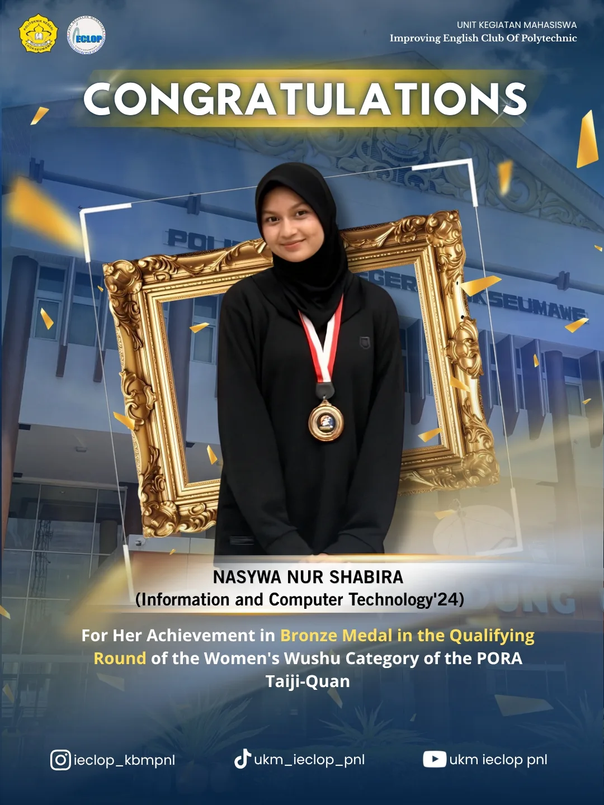
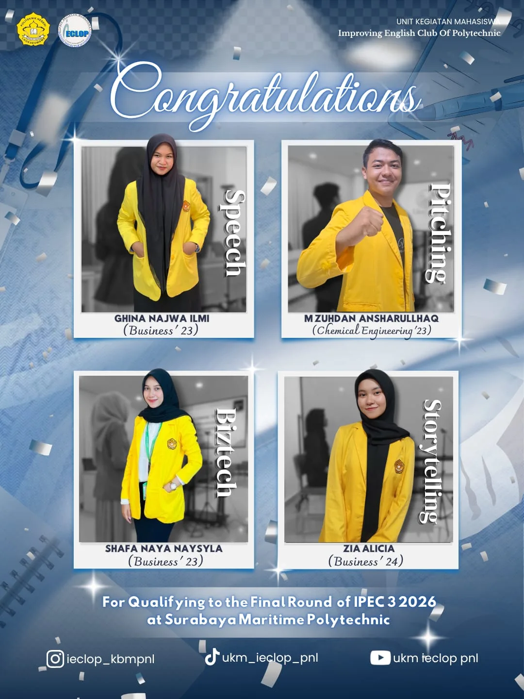
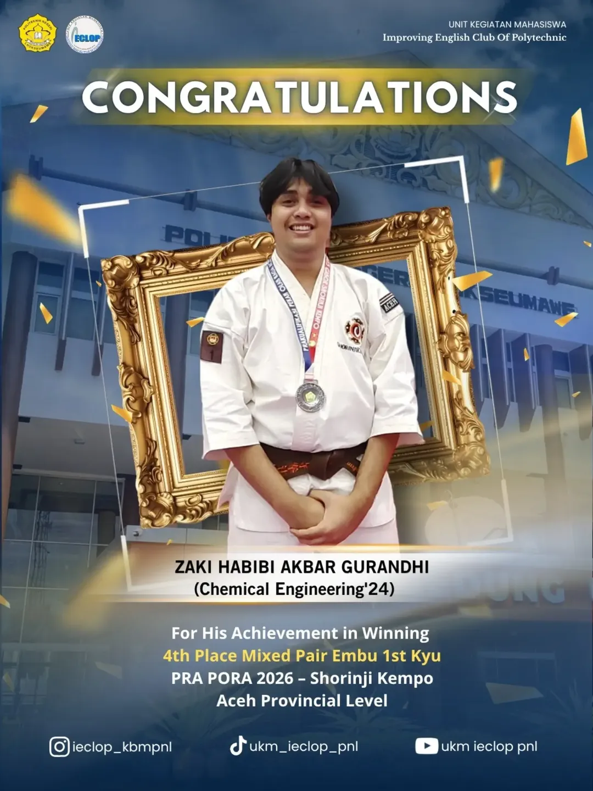
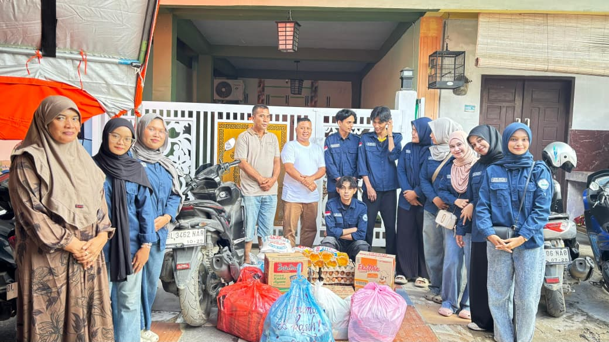

UKM IECLOP
Improving English Club of Polytechnic. Wadah belajar bahasa Inggris terbaik di Politeknik Negeri Lhokseumawe.
BERITA TERKINI

Achievement at National Polytechnic MTQ🌟
Selamat kepada Raisa Amanda Putri, Mahasiswa Bisnis ’24, atas prestasinya meraih Juara 3 Kategori Mumtaz Cabang Hifzil Putri pada MTQ Politeknik Nasional. Prestasi ini menjadi bukti dedikasi dan kerja keras yang luar biasa. 🎉🏆

Muhammad Azhar Refandi Wins 3rd Place in Nasyid Islami Competition🌟
Selamat kepada Muhammad Azhar Refandi, Mahasiswa Teknik Kimia ’24, atas prestasinya meraih Juara 3 pada Lomba Nasyid Islami dalam Road To Festival Ekonomi Syariah Sumatera 2026 di Universitas Syiah Kuala, Banda Aceh. 🎉🏆

Muhammad Zuhdan Ansharulhaq Wins 1st Place at PILMAPRES 2026🌟
Selamat kepada Muhammad Zuhdan Ansharulhaq, Mahasiswa Teknik Kimia ’23, atas prestasinya meraih Juara 1 PILMAPRES Tingkat Wilayah 2026 Program Diploma yang diselenggarakan oleh LLDIKTI Wilayah XIII di Banda Aceh. 🎉🏆

Announcing the IECLOP Selection Results
Selamat! 🎉💙 Hasil ini membuktikan kerja keras kalian. Persiapkan diri untuk tahap selanjutnya dan wakili IECLOP dengan bangga! Delegasi: Ghina Najwa Ilmi (Speech), Adha Gusti Harmadan (Interview), M. Zuhdan Ansharulhaq (Pitching), Shafa Naya Naysyla (Biztech), M. Alfaraby (Newscasting), Aqil Ocean Difra (Writing), Raisha Fathia (MC), Zia Alicia (Storytelling), Nazril Kanahaya Akbar (Poster).

Sports Achievement: Road to PORA Aceh 2026
Selamat! 🎉💙 Dengan bangga kami mengapresiasi Chairunnisa Alrohli Sadrina (Bisnis ’24) yang berhasil lolos kualifikasi PRA-PORA Aceh 2026 cabang Bulu Tangkis 🏸. Terus berikan yang terbaik dan wakili IECLOP dengan penuh percaya diri di tahap selanjutnya!

Wushu Bronze Medalist: PORA 2026
Selamat! 🥉✨ Kami bangga atas pencapaian Nasywa Nur Shabira (TIK ’24) yang berhasil meraih Medali Perunggu kategori Wushu Taiji-Quan Putri di PORA. Dedikasimu sangat menginspirasi—teruslah berkembang dan bersinar bersama IECLOP! 💙

The Journey Continues! 🚀✨
Selamat kepada seluruh peserta yang berhasil LOLOS ke babak berikutnya! 🎉💙
Berikut adalah perwakilan hebat kita yang siap melangkah maju:
1. Ghina Najwa Ilmi (Business ’23) - Speech
2. M. Zuhdan Ansharulhaq (Chemical Engineering ’23) - Pitching
3. Shafa Naya Naysyla (Business ’23) - Biztech
4. Zia Alicia (Business ’24) - Storytelling
Perjalanan baru saja dimulai! Persiapkan diri kalian sebaik mungkin dan berikan performa terbaik di babak selanjutnya. 🔥

Stepping Stone to Victory! 🥈🥋
Selamat atas pencapaian luar biasa Zaki Habibi Akbar Gurandhi (Chemical Engineering ’24)! 🎉💙 Zaki berhasil meraih Juara 4 Embu Berpasangan Campuran Kyu I pada ajang PRA PORA 2026 Shorinji Kempo Tingkat Provinsi Aceh. 🥋🏅 Perjuangan baru saja dimulai, Zaki! Tetap percaya pada proses, jaga kobaran semangatmu, dan teruslah bersinar di matras-matras berikutnya. We are so proud of you! 🚀✨

Trust Delivered, Kindness Shared ✨🤲
Dari aksi galang dana di jalanan hingga ke senyuman saudara kita di lapangan. Penyaluran donasi khusus untuk 4 mahasiswa PNL dan warga terdampak di daerah Pardede, Gampong Jawa, telah selesai dilaksanakan dengan lancar. Terima kasih sebesar-besarnya kepada seluruh donatur dan relawan yang terlibat. Bersama, kita ringankan beban sesama!